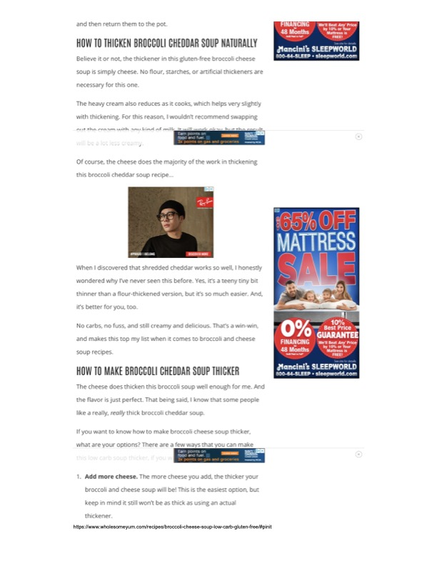

Broccoli Cheese Soup (Low Carb, Gluten Free) - Thickening Tips

Original cookbook page 19
A low carb, gluten-free broccoli cheddar soup that uses cheese as a natural thickener instead of flour, starches, or artificial thickeners. Tips page for making the soup thicker.
Ingredients
- Cheese (main thickening agent)
- Heavy cream (reduces while cooking for additional thickening)
- Broccoli
- Additional ingredients not specified on this page
Instructions
- Use cheese as the main thickener instead of flour or starches.
- Heavy cream reduces as it cooks to help with thickening.
- Do not swap cream with milk as the result will be less creamy.
- To make thicker: add more cheese for best results.
Recipe #19 from collection